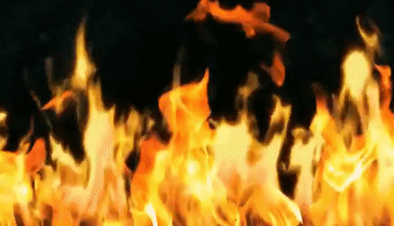

⛧ Satanismus ⛧
Die Säulen der satanistischen Glaubensgenossen
Umwelt und Gesellschaft
- Sofern die Grundbedürfnisse eines Einzelnen erfüllt sind, gilt das Wohl der Allgemeinheit über dem des Einzelnen.
- Bayern wird jegliches Lebensrecht abgesprochen
- Die Arche Internetz gehört zu unserem Feindbild
- Die Verspottung anderer Religionen (insbesondere Christentum) wird toleriert.
- Katzen gelten als Abbild Satans und sind deshalb heilig. Ihnen darf niemals geschadet werden. Sie zu lieben ist eine PFLICHT!
- Tiere sind dem Menschen in jeglicher Hinsicht überlegen und gehören desgleichen behandelt.
- Die Erhaltung des Friedens und Lebensraums ist eine heilige Pflicht und legitimiert Gewalttaten gegenüber schädlichen Insekten sowiedummen Menschen (alle Radikale), die sich nicht des Friedens verschrieben haben.
- Geschenke jeglichen Wertes und unabhängig der Verpackung gehören geehrt.
Leben und Gesundheit
- Spaghetti, Chips und Kuchen sind die Grundnahrungsmittel der Genossen.
- Tomaten sind grundsätzlich böse und gehören entfernt.
- An seine körperlichen physikalischen Grenzen zu gehen ist erstrebenswert.
- Der Körper ist ein Tempel, dessen Instandhaltung oberste Priorität hat.
- Den Geist mit neuem Wissen oder Erkenntnissen zu versorgen ist erstrebenswert.
Feinde und Freunde
- Katzen sind des Genossen beste Freunde.
- Alles aus Bayern stammende ist widerwärtig und keiner Beachtung wert.
- Arche Internetz Mitglieder SIND DAS BÖSE UND GEHÖREN AUSGEMERZT!
Wie werde ich Satanist? Voraussetzungen und Qualifikationen
- Satan ganz ok finden
- Satan studieren
- Rituale/Opfergaben vollziehen
- Sich mit anderen Satanisten austauschen
- Besonderer Hass auf Menschen, die primitiven Religionen oder Gruppen angehören.
- Spaß am Hass auf Dinge und nihilistisch-pessimistischer Weltanschauung
- Nicht vollkommen bescheuert (min Hauptschulabschluss)
- Faszination für Mordfälle, unerklärliche Dinge, Universum, Star Wars und weltliche Katastrophen
- Einigermaßen gutaussehend!
- Allumfassende Liebe zu Katzen
- Reich sein (Monopoly-Geld zählt auch)
- Ein Mindestmaß an Humor
Rituale und Opfer
- Alle Mitglieder müssen sich einem Blutsschwur unterziehen.
- Nächtliche Wanderungen
- Mondrituale
- Feuertanz
- Voodoo
- Menschenopfer sind legitimiert, sofern es sich um ignorante, emotionslose, unheilbar verblödete Artgenossen handelt.